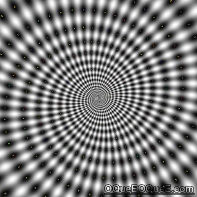

Exemplo: Execute um JavaScript ao mover o ponteiro do mouse sobre uma imagem:
A função bigImg() é acionada quando o ponteiro do mouse do usuário é movido sobre a imagem. Esta função amplia a imagem.
A função normalImg () é acionada quando o ponteiro do mouse é movido para fora da imagem. Essa função define a altura e largura da imagem de volta ao normal.